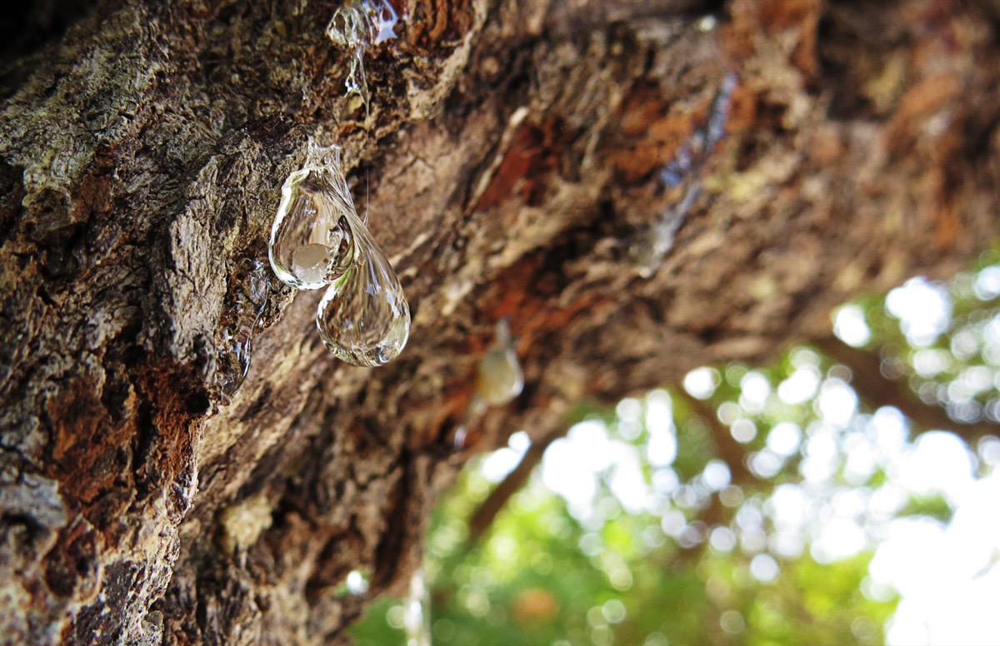

Sakız Adası'nın hem kültürel hem doğal güzelliklerini kısa sürede deneyimlemek isteyenler için dengeli bir 2 gün 1 gece rota önerisi.

1. Gün: Chora ve Sahil
Sabah: Çeşme'den feribotla Sakız Adası'na geçiş (en hızlı gemi ile 17 dakika). Chora'ya varınca Kastro mahallesinde kısa bir yürüyüş, Argenti Halk Bilim Müzesi ziyareti.
Öğle: Liman kenarındaki bir tavernada taze balık ve mezelerle öğle yemeği. Pazar sokağından mastiha ürünleri ve yerel baharatlar alışverişi.
Öğleden Sonra: Karfas ya da Agia Fotini plajında dinlenme. Sahil promenadında akşamüstü yürüyüşü, karşıda Türkiye silüetini izleme.
Akşam: Chora'da yöresel bir restoranda mastiha likörü eşliğinde akşam yemeği. Konaklamanız için Chora otel veya pansiyonları en merkezi seçenek.
2. Gün: Sakız Köyleri ve Günbatımı
Sabah: Araç kiralayarak güneye inin. Pyrgi'de xysta desenli köy evlerini ve Ayios Apostoloi Kilisesi'ni ziyaret edin. Mastic Museum'da sakız ağacının tarihini keşfedin.
Öğle: Mesta'nın ortaçağ sokaklarında kaybolun. Köy meydanındaki geleneksel tavernada yemek yiyin, mastiha likörü tadın.
Öğleden Sonra: Lithi Plajı'nda kısa bir mola. Adanın batı kıyısında gün batımı için mükemmel bir nokta.
Akşam: Çeşme'ye dönüş feribotu. Gidiş-dönüş biletinizi Ferrylines.com.tr üzerinden önceden alarak yer garantisi sağlayın.
İpucu: Araç Kiralaması
Bu rotayı araç olmadan tamamlamak zor. Chora'da birkaç küçük araç kiralama ofisi var. Rezervasyonu varışınızda değil, seyahatten önce çevrimiçi yapın — özellikle yaz aylarında araçlar hızla doluyor.
Rotanızı Detaylandırın
Bu rotayı daha da zenginleştirmek için GuideChios.com'a göz atın. Adaya gidenlerin mutlaka başvurduğu bu rehberde restoranlar, saklı koylar, aktiviteler ve güncel yerel bilgiler kapsamlı biçimde yer alıyor.